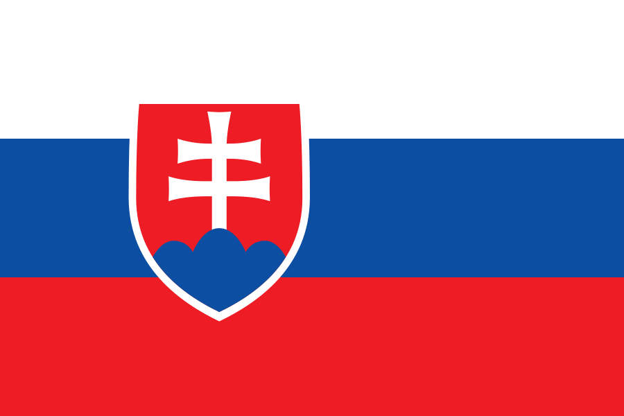

Holba Josef
Holba Josef
Place: Brumov-Bylnice, Czechia
Rating: 2209.14, Std: 87.87, Rank: 70
First game: 2022-05-28, Last game: 2026-07-19
Top rating: 2254.39 (2022-05-28)
Games: 58, Wins: 28, Draws: 4, Losses: 26
Gy1: 14, Gy2: 22, Gy5: 58
| Czech Open 2026 | ||||
|---|---|---|---|---|
| Date | 2026-07-19 | Rating | 2209.14 | |
| Round | Color | Result | Opponent | |
| 1 | Black | Win |  Kamarás Krisztina Kamarás Krisztina | 1775.74 |
| 2 | White | Loss | Tesařík Štěpán | 2525.55 |
| 3 | White | Loss | Kouba Petr | 1977.79 |
| 4 | White | Win | Ornstová Viktorie | 1797.31 |
| 5 | Black | Loss | Podolský Petr | 2238.09 |
| 6 | White | Win | Kamarás Csaba | 1801.81 |
| 7 | Black | Win | Hyžík Stanislav | 1953.84 |
| BrnoCup 2026 | ||||
| Date | 2026-05-16 | Rating | 2212.90 | |
| Round | Color | Result | Opponent | |
| 1 | Black | Win | Hrbata František | 1524.53 |
| 2 | Black | Win | Olšan Thomas | 1655.51 |
| 3 | White | Loss | Horák Jakub | 2444.70 |
| 4 | White | Win | Podolský Petr | 2239.77 |
| 5 | White | Win | Šemora Jakub | 1870.61 |
| 6 | White | Loss | Souček Lukáš | 2491.81 |
| 7 | White | Win | Mikeš Alois | 2109.13 |
| Gomoku World Championship 2025, QT | ||||
| Date | 2025-08-07 | Rating | 2217.33 | |
| Round | Color | Result | Opponent | |
| 1 | White | Loss |  Żukowski Michał Żukowski Michał | 2555.84 |
| 2 | White | Win | Habr Ondřej | 2008.68 |
| 3 | Black | Draw | Horák Jakub | 2486.33 |
| 4 | Black | Loss | Fojtík Jakub | 2281.11 |
| 5 | White | Loss |  Sun In Sun In | 2205.25 |
| 6 | White | Win | Kamarás Krisztina | 1763.81 |
| 7 | Black | Win | Kamarás Csaba | 1781.36 |
| 8 | White | Loss | Małowiejski Piotr | 2291.78 |
| Czech Open 2024 | ||||
| Date | 2024-07-14 | Rating | 2241.32 | |
| Round | Color | Result | Opponent | |
| 1 | Black | Win | Hakl David | 2179.34 |
| 2 | Black | Loss | Tesařík Štěpán | 2493.38 |
| 3 | Black | Win | Kouba Petr | 1953.83 |
| 4 | White | Win | Laube Pavel | 2576.63 |
| 5 | White | Loss | Háša Miroslav | 2663.37 |
| 6 | White | Loss | Fojtík Jakub | 2284.61 |
| 7 | Black | Win | Benovič Martin | 1948.09 |
| Brnocup 2024 | ||||
| Date | 2024-05-25 | Rating | 2241.65 | |
| Round | Color | Result | Opponent | |
| 1 | White | Win | Novák Mikuláš | 1977.79 |
| 2 | White | Loss | Souček Lukáš | 2511.71 |
| 3 | Black | Draw | Małowiejski Piotr | 2294.90 |
| 4 | White | Draw | Tesařík Štěpán | 2492.87 |
| 5 | White | Loss | Fejta Jakub Libor | 2110.74 |
| 6 | Black | Win | Kamarás Krisztina | 1768.31 |
| 7 | White | Win | Mikeš Alois | 2078.41 |
| 16th Polish Gomoku Championship | ||||
| Date | 2022-11-20 | Rating | 2243.53 | |
| Round | Color | Result | Opponent | |
| 1 | White | Loss | Majksner Łukasz | 2388.46 |
| 2 | Black | Loss | Žižka Petr | 2444.26 |
| 3 | Black | Loss | Souček Lukáš | 2465.13 |
| 4 | Black | Loss |  Eged Igor | 2426.95 |
| 5 | White | Loss | Horák Jakub | 2449.20 |
| 6 | White | Loss | Małowiejski Piotr | 2280.41 |
| 7 | White | Win | Brachaczek Bogdan | 2461.30 |
| 8 | White | Loss | László Zoltán | 2746.10 |
| Czech Open 2022 | ||||
| Date | 2022-07-17 | Rating | 2251.52 | |
| Round | Color | Result | Opponent | |
| 1 | Black | Win | Kamarás Krisztina | 1792.49 |
| 2 | Black | Loss |  Hõbemägi Martin Hõbemägi Martin | 2633.94 |
| 3 | White | Loss | Topkin Georg-Romet | 2468.59 |
| 4 | White | Draw | Eged Igor | 2437.80 |
| 5 | Black | Win | Kamarás Csaba | 1794.28 |
| 6 | White | Win | Mirme Madli | 2043.03 |
| 7 | Black | Loss | Tesařík Štěpán | 2506.25 |
| Brnocup 2022 | ||||
| Date | 2022-05-28 | Rating | 2254.39 | |
| Round | Color | Result | Opponent | |
| 1 | White | Loss | László Zoltán | 2752.19 |
| 2 | Black | Win | Kundrata Matyáš | 1877.99 |
| 3 | Black | Win | Xia Patrik | 1643.96 |
| 4 | Black | Win | Kořínková Soňa | 1886.11 |
| 5 | White | Win | Háša Miroslav | 2561.78 |
| 6 | White | Win | Žižka Petr | 2438.85 |
| 7 | White | Loss | Muzika Martin | 2672.15 |